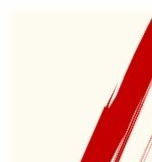
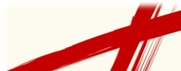
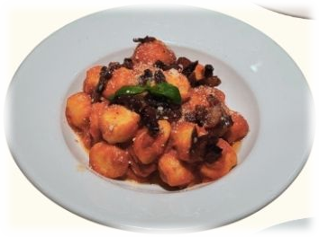
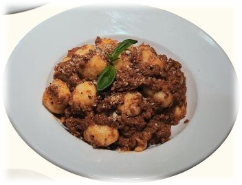
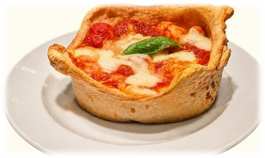

Gnocchi
Order your gnocchi with any of our pasta sauces!



Gnocchi Carbonara $26.50
House-made gnocchi, tossed in a rich egg yolk, parmesan and pecorino sauce finished with a dash of cream.

Gnocchi Classico $20.50
House-made gnocchi tossed in a rich tomato sauce, topped up with stracciatella and a fresh basil leaf. V

Gnocchi Amatriciana $25.50
Gnocchi tossed in a rich tomato and pork sauce, finished off with guanciale and pecorino.

Gnocchi Bolognese $27.50
House-made gnocchi tossed in a rich, slow-simmered beef ragu.

Gnocchi al Pesto $22.50
Homemade potato gnocchi with basil pesto, semi-dried cherry tomatoes and stracciatella. V

Gnocchi Sorrentina $23.50
+ $2.50 Focaccia Bowl
Homemade potato gnocchi baked with Napoli sauce and mozzarella cheese. V